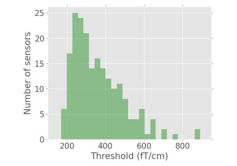

Examples Gallery¶
This section of the documentation is learning-oriented and shows off some of
the basic functionality of autoreject.


Plot channel-level thresholds
This section of the documentation is learning-oriented and shows off some of
the basic functionality of autoreject.